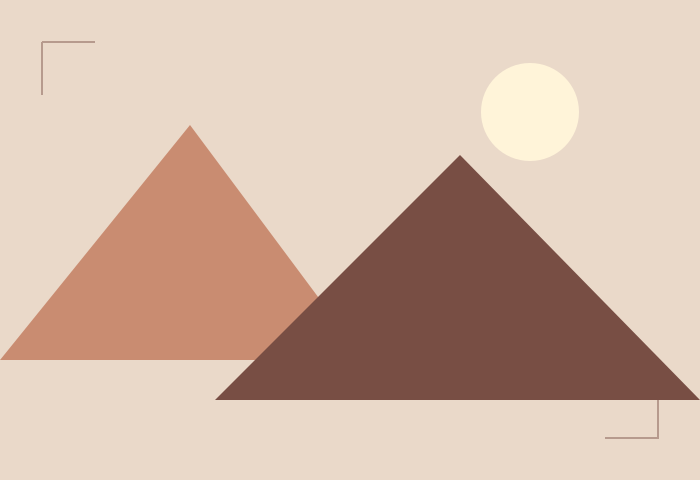
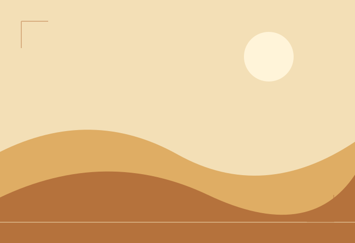
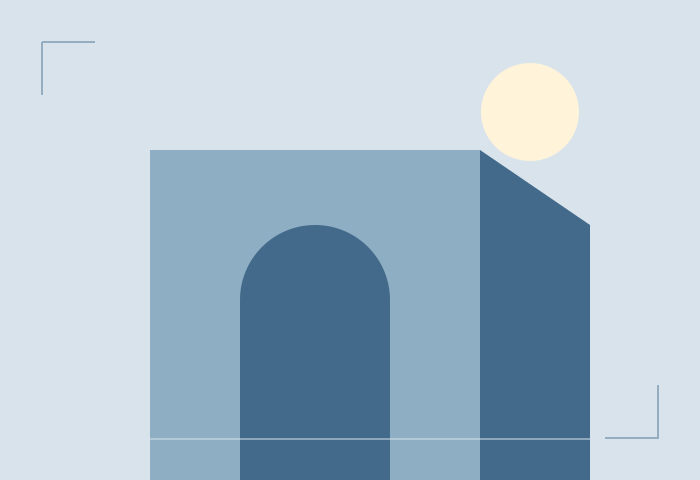

01 / Web design
Atlas collection
An editorial card collection with equal proportions and warm visual storytelling.
View project ↗Assignment #2 / Task 4 · Flexbox + Grid
A student portfolio exploring the intersection of simple visuals and considered front-end development.

01 / Web design
An editorial card collection with equal proportions and warm visual storytelling.
View project ↗
02 / Web design
A reading space that pairs a useful sidebar with a flexible editorial layout.
View project ↗
03 / Web design
Nine visual experiments collected in a responsive, evenly spaced gallery.
View project ↗